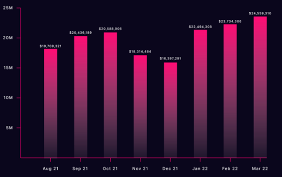

Economy is the natural evolution of Play2Worldcoin. Global, open, and fair, PLAY2WORLD is a next generation cryptocurrency that will bring the next billion people into Web 3.0, and make Play part of global GDP.
If you believe that PlayIng Games has real value, read on. If you don’t share this belief yet, read our blog.
This paper has been prepared for information and discussion purposes only. The management and founders of the Play2World Foundation, the Play2World Foundation remains committed to breaking new ground in creating the conditions for new ways to monetise activity and healthy habit formation by deploying blockchain technologies. The Play2World Foundation may adjust the operating model at any time as it sees fit to remain consistent with local regulation and business operating rules that may apply in certain jurisdictions. The Play2World Foundation may But is under no obligation to adjust the content of these papers/documents at its absolute discretion at any time including without limitation in response to the changes outlined above. Whilst the Play2World Foundation may raise funds via a token sale in the future, nothing in this paper constitutes an offer or an invitation to any third party to make any investment or to subscribe for any token, asset, security, or other instrument of any kind. The information in this paper is subject to change, deletion or revocation at any time and you should not rely on any content contained within this paper for any purposes whatsoever whether in relation to any future token sale by the Play2World Foundation or otherwise.
With 76M+ users, playing 20% more after downloading Play2Worldcoin, and 600 partners providing, in Q1 of 2022 alone, $70M worth of goods and services in exchange for playing, you could say, “mission accomplished.”
We say, we are just getting started.
The mission remains the same: to reward game players. Tokenization, however, changes everything. What was regional, becomes global. What was centralized, becomes permissionless. What was a closed economy, becomes a world in which every step mints a token that can be exchanged, redeemed, and applied to many new use cases. We call this...
We have created an entirely new way for you to earn, an entirely new mechanism of value creation. Everyone has an equal right to earn from, and contribute to, the new economy.
PLAY2WORLD increases activity, but we wouldn’t want to claim that PLAY2WORLD ‘causes’ a healthier world. The relationship between health and activity is one of correlation, not causation.
When people become more active, they are more likely to improve their health in other areas too. PLAY2WORLD can kick-start that positive feedback loop for people’s mental health.
Consider that the purpose of PLAY2WORLD. We want people to get moving because we hope, by incentivizing one contributing factor to general well-being, that we can play a part in bringing about that well-being to a greater number of people.
Initially, PLAY2WORLD will be available to eligible users who can download the Play2Worldcoin App. In early Q1 2022, Play2Worldcoin had 65M users; by early May 2022, it was 76M. The number of users is rapidly growing, and we expect this to continue as we have just initiated our global expansion plan, increasing the countries the app is available in from 75 to 160.
By the PLAY2WORLD Token Generation Event, we anticipate a predicted minimum of 137M users.
Monthly $ Value of Goods and Services Exchanged on PLAY2WORLD Coin Marketplace
Based on the market penetration of 2.37% in 75 countries with a cumulative population of 2.1bn. This is undoubtedly conservative, given the scope for existing country adoption resulting from tokenization, along with marketing efforts, which the initial Play2Worldcoin adoption was achieved without.
The Play2World Foundation will make an offer for every Play2Worldcoin user to
opt-in to claim 1 PLAY2WORLD for every Play2Worldcoin in their wallet, without
burning their Play2Worldcoins. The TGE will occur in Q3 2022. At TGE, the
Play2World Foundation will mint enough PLAY2WORLD to match the Play2Worldcoins of
users who have opted-in.
The team who brought you PLAY2WORLD know that usership alone does not
guarantee a successful product. We have not only created an app people love, but
created sustainable ways to monetize user engagement and playing.
Product market fit has been validated by Play2Worldcoin’s success. That a centralized, regional, “walled garden” currency with a limited range of rewards has gained such popularity testifies to the strength of the product, and the simple fact that people love to earn rewards for playing. It is an offering that has spoken to brands, institutions, and users alike.
Play2World shares the principles of Play2Worldcoin, but leverages DeFi, NFTs and decentralized governance to unlock new value, which is returned to the user.
PLAY2WORLD is minted solely by verified game. Therefore, a stable number of
users increases minting “input”. An increase in users increases the input. A change
in user habits – all users playing more because of intention and rewards – makes
the input rise exponentially.
Each PLAY2WORLD will require more points to mint than the last. To achieve our
vision of making the world more active, PLAY2WORLD will be harder to mint with
time. Not only does this incentivize users to get moving now – as their Play
generates more PLAY2WORLD today than tomorrow – it preserves the utility of
PLAY2WORLD as the model represents an ever increasing marginal cost of
production.
The open economy of the game is enabled by PLAY2WORLD. It is a new market, a
new economy, in which anyone, anywhere, can be rewarded in increasingly
attractive ways, for any form of activity.
Play Validators are required to verify the validity of Play and update the blockchain
accordingly. Consistent and accurate Play validation is fundamental to ensuring the
integrity of the underlying asset
The current process at Play2Worldcoin – and the process applied to the launch
claim – is such that: for every 1,000 verified points, 1 Play2World coin is awarded.
The validator receives the raw data from the recording device, and implements an
algorithm to detect fraudulent behavior, and ensure only true Play is rewarded.
Play2World Ltd is the only Play Validator as of launch.
Going forward, we intend to decentralize the validation process to enable third
parties, such as activity trackers, playing games, and app developers to operate as
Play Validators. These tracking services will have to stake PLAY2WORLD to operate
as Play Validators. In return, for their contribution, they will receive a % fee for all
transactions they process. By decentralization, we enable new markets for different
types of activity, and expand the breadth of the open economy of Play.
Play Validators receive 5% of the PLAY2WORLD they contribute to the minting of. This is the same fee that Play2World Ltd has earned for its verification of points via the Play2World coin App.
Your data is yours. Now, and forever.
Play2Worldcoin has never sold user data. Neither will the Play2World Foundation.
The Play2World Foundation will create a platform through which PLAY2WORLD
holders can choose to monetize their data.
Through this platform, a PLAY2WORLD holder could, for example, choose to
engage a health insurer who will pay for access to their Play data.
A PLAY2WORLD holder could contribute their data to an aggregate data pool,
resulting in features such as global activity indices. Insurers, doctors,
academic institutions, and investors would pay for this data – and you,
the creator and owner of that data, would receive the reward. The
DAO would collect a fee for running the service.
We believe in autonomy. This is a point of principle, and a part of our
mission. We believe that each person should own the data they create;
and, by owning it, increase their own reward for moving.
The revenue generated by the activities listed below will at first go to the Play2World Foundation, which will drive this value back into PLAY2WORLD. Thereafter, it will go to the Play2World DAO, which will be governed by vePLAY2WORLD (locked PLAY2WORLD for governance).
The following tokeomics phases indicate the core functionality and utility of PLAY2WORLD. To achieve this, the Foundation will be providing a Play2World Wallet App.
From TGE onwards, we anticipate that PLAY2WORLD will be available on the world's most popular CEXs and DEXs. The first phase of utility for PLAY2WORLD will include:
Exponentially decreasing inflation
Whether you are a casual gamer or a the top scorer, you will earn for it.
The open economy of Play introduces a new way to think of exchange. You do not have to part with something valuable to gain something else. The Play you exchange has already benefited you and, even better, it is easily accessible, and easily producible.
It is also self-fulfilling. When you exercise, endorphins create a positive association to sustain the behavioral change. PLAY2WORLD enters the positive feedback loop to mean that, not only will you feel better, you will have material benefit for it, further prompting the continuation and sustainment of that exercise, making you feel better, creating more rewards, and so on. If exercise is self-fulfilling, so is PLAY2WORLD.
You will benefit yourself, your family, your employer, your society, and the world you are a part of.
Now, take a game!
... you may just like how it feels.
Keep up with the Play.
For updates and community contributions,
please follow our channels!